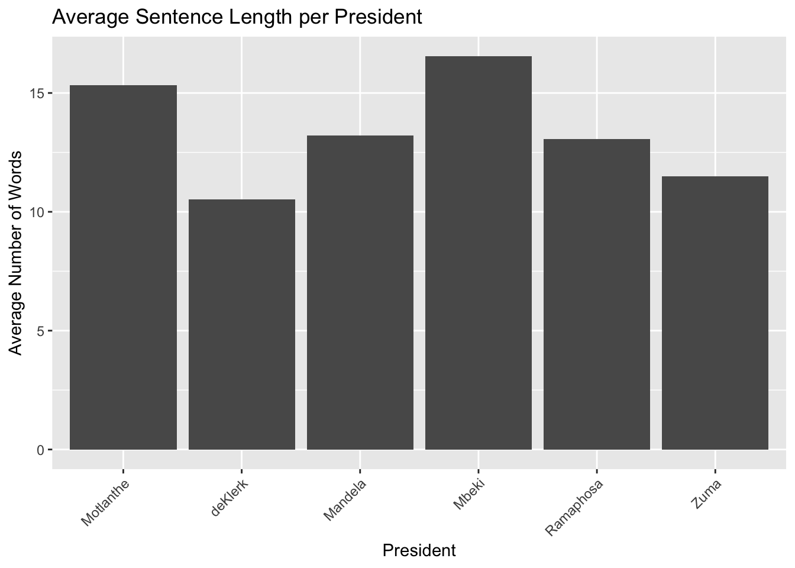
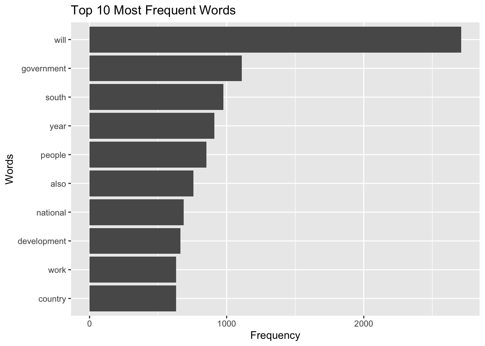

The following objects are masked from 'package:data.table':
between, first, last
The following objects are masked from 'package:stats':
filter, lag
The following objects are masked from 'package:base':
intersect, setdiff, setequal, union
library(tidytext)
Introduction
blah blah blah
Data Cleaning
# Install and load the stringi packagedf#install.packages("stringi")library(stringi)clean_text <-function(sentences) {# Convert to a text corpus corpus <-Corpus(VectorSource(sentences))# Convert to lowercase, remove punctuation, remove stopwords, strip whitespace corpus <-tm_map(corpus, content_transformer(tolower)) corpus <-tm_map(corpus, removePunctuation) corpus <-tm_map(corpus, removeWords, stopwords("en")) corpus <-tm_map(corpus, stripWhitespace)return(unlist(sapply(corpus, as.character)))}# Function to parse text document into sentences excluding the first lineparse_sentences <-function(file_path) {# Read the text and exclude the first line text_data <-readLines(file_path) text_without_first_line <-paste(text_data[-1], collapse =" ")# Split the text into sentences and remove empty or whitespace-only strings sentences <-unlist(stri_split_boundaries(text_without_first_line, type ="sentence")) sentences <- sentences[stri_trim_both(sentences) !=""]return(sentences)}# Initialize an empty dataframedf <-data.frame(Year =integer(), President =character(), Sentences =character())# List of provided filesfiles <-c("2023_Ramaphosa.txt", "2022_Ramaphosa.txt", "2021_Ramaphosa.txt", "2020_Ramaphosa.txt", "2019_Ramaphosa.txt", "2019_Ramaphosa_2.txt", "2018_Ramaphosa.txt", "2017_Zuma.txt", "2016_Zuma.txt", "2015_Zuma.txt", "2014_Zuma.txt", "2014_Zuma_2.txt", "2013_Zuma.txt", "2012_Zuma.txt", "2011_Zuma.txt", "2010_Zuma.txt", "2009_Zuma.txt", "2009_ Motlanthe.txt", "2008_Mbeki.txt", "2007_Mbeki.txt", "2006_Mbeki.txt", "2005_Mbeki.txt", "2004_Mbeki.txt", "2004_Mbeki_2.txt", "2003_Mbeki.txt", "2002_Mbeki.txt", "2001_Mbeki.txt", "2000_Mbeki.txt", "1999_Mandela.txt", "1999_Mandela_2.txt", "1998_Mandela.txt", "1997_Mandela.txt", "1996_Mandela.txt", "1995_Mandela.txt", "1994_Mandela.txt", "1994_deKlerk.txt")# Loop through each file and append to dataframefor (file in files) {# Extract year and president's name from filename file_info <-strsplit(file, "_")[[1]] year <-as.integer(file_info[1]) president_name <-gsub(".txt", "", file_info[2]) sentences <-parse_sentences(file)# Clean the sentences clean_sentences <-clean_text(sentences) temp_df <-data.frame(Year = year, President = president_name, Sentences = clean_sentences) df <-rbind(df, temp_df) data<- df}
EDA
Sentences per President
Average Sentence Length per President

Top words words overall

Feature Extraction
TF-IDF Tokenisation
Here I am running the TF-IDF tokenisation then splitting the data into training, validation and test sets
corpus <-Corpus(VectorSource(data$Sentences))dtm <-DocumentTermMatrix(corpus, control =list(weighting = weightTfIdf))X_tfidf <-as.matrix(dtm)setDT(data)setkey(data, President)train_indices <-createDataPartition(data$President, p =0.6, list =FALSE)X_train_tfidf <- X_tfidf[train_indices, ]y_train_tfidf <- data$President[train_indices]X_temp_tfidf <- X_tfidf[-train_indices, ]y_temp_tfidf <- data$President[-train_indices]val_indices <-createDataPartition(y_temp_tfidf, p =0.5, list =FALSE)X_val_tfidf <- X_temp_tfidf[val_indices, ]y_val_tfidf <- y_temp_tfidf[val_indices]X_test_tfidf <- X_temp_tfidf[-val_indices, ]y_test_tfidf <- y_temp_tfidf[-val_indices]